목차
로지스틱 회귀모델은 데이터 분석을 전공하지 않더라도 이 분야에 관심있는 분이라면 한 번쯤 꼭 들어봤을 주제입니다.
이번 장에서는 로지스틱 회귀모델의 개념과 원리, 종류들에 관해서 배우고 실제 코드로 적용해 볼 것입니다.
- 로지스틱 회귀(Logistic Regression)란?
- 로지스틱 모형 속으로
- 로지스틱 모형의 종류
- 로지스틱 회귀모형 실습
3.1 Binary Logistic Regression
3.2 Nominal Logistic Regreeion
3.3 Ordinal Logistic Regression
1. 로지스틱 회귀(Logistic Regression)란?

로지스틱 회귀모델은 영국의 통계학자인 데이비드 콕스 경(Sir David Cox)이 1958년에 제안한 확률모델로, 독립변수의 ‘선형 결합’을 이용해서 사건의 발생 가능성을 예측하는 통계 기법입니다. 그래서 ‘로지스틱’이란 수식어가 붙어도 회귀는 회귀입니다. 일반적인 회귀 분석의 목표와 동일하게, 종속 변수와 독립 변수 간의 관계를 구체적인 함수로 나타내어 향후 예측 모델에 사용됩니다.
여기서 ‘회귀’는 평균적으로 얼마만큼 독립변수가 변하는가 하는 경향성, 상관을 나타내는 분석 방법입니다. 회귀분석에 대해 궁금하신 독자분께서는 앞서 ‘회귀분석’ 장에서 다루었던 내용을 참조해주시면 좋습니다. (LINK) 로지스틱 회귀는 일반적인 선형 회귀 분석과 유사하지만, 종속 변수가 ‘범주형 데이터’를 대상으로 하는 차이가 있습니다. 이때 예측을 위한 입력 데이터가 주어졌을 때 결과인 종속변수가 특정 ‘부류(class)’로 나뉘기 때문에 일종의 분류 기법(classification) 으로도 활용되고 있습니다. 링크!회귀
여기서 ‘범주형 데이터’는 명목(nominal), 순서(ordinal)가 있는 이산형 데이터를 의미합니다. 데이터의 구분에 관해서 잠시 복습하면, 데이터는 크게 정형/비정형 데이터로 나뉘며 비정형 데이터는 영상, 이미지, 음성, 글 등 다양한 타입이 있습니다. 이외에 통계 데이터로 테이블에 담아서 사용하는 정형 데이터는 질적(qualitative)인 데이터와 수치(numeric)형 데이터로 나뉩니다. 여기서 질적인 데이터는 앞서 언급한 범주형(categorical) 데이터이며, 수치형 데이터는 구간(interval)과 비율(ratio)를 나타내는 연속형, 이산형 데이터입니다. 링크!데이터
바로 이 데이터의 차이에서 일반적인 선형 회귀 모델과 로지스틱 회귀 모델의 차이점이 드러납니다. 로지스틱 회귀는 두 개의 범주를 위한 이항형(binomial) 모델 또는 두 개 이상의 다항형(multinomial) 모델이 될 수 있습니다. 여기서 각각의 카테고리로 분류될 확률의 합은 1이됩니다. 이때, 종속변수의 결과가 0과 1사이의 값으로 제한된다는 점과, 종속변수의 이산적 특성 때문에, 조건부 확률의 분포가 정규분포 대신 이항분포를 따릅니다.
따라서 예측하고자 하는 종속변수의 값이 0과 1의 구간을 가지는 ‘범주’로 존재하는 데 반해, 단순 선형회귀 모형을 통해서는 0과 1의 범위를 벗어나는 결과가 나와서, 정확하지 않은 예측 결과를 초래할 수 있습니다. 이를 해결하기 위해서, 로지스틱 회귀는 연속적이고 증가 함수이며 0과 1 사이의 값을 가지는 연결함수를 이용했는데, 이 때 많이 사용되는 모델이 ‘로지스틱’ 함수입니다.
2. 로지스틱 모형 속으로
긴 이야기 끝에 그 ‘로지스틱’에 도달했습니다. 로지스틱을 검색해 보셨다면 흔히 물류, 병참, 보급이라는 단어의 뜻으로 사용되는 걸 알 수 있습니다. 하지만 로지스틱 함수, 방정식은 본래 생물학에 그 뿌리를 두고 있습니다. 1838년 벨기에의 수학자 겸 생물학자인 Pierre François Verhulst 가 인구를 비롯 생물의 개체수 증가를 설명하는 모델로 고안했던 방정식입니다. 이를 통해 동물 개체군의 증가, 유행병의 확산 속도 또는 암세포의 증식 속도, 사회에서의 정보 확산, 광고의 영향 등을 분석할 수 있었습니다. 제한된 환경, 억제를 표현하는 환경 수용력과 그 생물이 도달할 수 있는 최대 증가율(내적 증가율)을 표현한 것으로 처음에 작았던 개체수로 시작한 그래프는 급히 상승하다가 일정한 값으로 수렴하는 시그모이드 곡선의 형태가 됩니다.
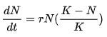
K는 환경 수용력 (특정 환경에서 살 수 있는 개체수의 정원), r은 내적 증가율 (그 생물이 도달할 수 있는 최대 증가율), N은 개체 수를 의미합니다.

실제로도 많은 자연, 사회현상에서는 특정 변수에 대한 확률값이 선형이 아닌 S곡선 형태를 따르는 경우가 많다고 합니다. 로지스틱 함수의 독립변수로는 실수 범위 내에서 어떤 값도 입력 받을 수 있지만, 출력 결과인 종속변수는 항상 0에서 1 사이의 값을 가집니다. 즉 확률 밀도함수의 요건을 충족시키는 함수입니다. 이는 로지스틱 회귀의 목적과 완벽하게 부합합니다.
그렇다면 이 로지스틱 함수에 어떻게 데이터를 매핑(연결)시킬 수 있을까요? 이는 오즈(odds)를 로짓(logit) 변환을 수행함으로써 얻어집니다.
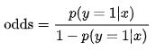
오즈는 우리말로 ‘승산’ 또는 ‘승산비’라고 합니다. 성공 확률이 실패 확률에 비해서 몇 배 높은가를 나타내며 여기서 ‘이김’이라는 개념을 해당 부류에 속할 확률로 표현하면 식을 이용할 수 있습니다.
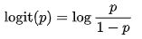
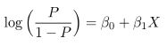
로짓은 오즈에 로그를 취한 함수로서 입력 값의 범위가 0~1일 때 출력 값의 범위를 무한대로 조정하기 위해서 이용됩니다. 이렇게 조정된 값을 로지스틱 함수에 입력해서 매핑시킬 수 있습니다.
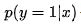
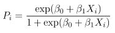
로지스틱 함수에 독립 변수 x가 주어졌을 때, 종속 변수가 범주에 (여기서는 y=1) 속할 확률은 위와 같습니다. 해당 범주에 분류될 조건부 확률을 표현하면 위의 식과 같으며 그래프는 시그모이드의 형태로 S-곡선과 동일하게 표현됩니다. 이제 기본적인 로지스틱 모델을 가지고 실제 데이터 사례에 맞춰 적용해 보겠습니다.
3. 로지스틱 모형의 종류
앞서 언급한 범주형 데이터가 명목인가 또는 순서인가에 따라서 로지스틱 모형의 설계와 계산이 달라집니다. 종속변수를 명목 데이터라고 보면, 그 중에서 2개의 부류로 나뉘는 Binary한 경우인지, 아니면 3개 이상의 부류로 나뉘는 일반적인 Nominal한 경우인지 먼저 분류됩니다. 범주형 데이터에서 명목이 아닌 순서를 나타내는 데이터를 표현하고 있다면, Ordinal Logistic Regression Model을 이용합니다. 예를 들어, ‘이다 아니다’만을 구분하고 싶다면 binary, ‘사과 배 바나나…’를 구분하고 싶다면 nominal, 순서가 있는 ‘medium, low, high’ 등을 구분하고 싶다면 ordinal 모델을 사용하는 것입니다.
3.1 Binary Logistic Regression
먼저 이항 로지스틱 회귀입니다. 오로지 2개의 가능한 결과만을 고려합니다. 따라서 이항 분포 (또는 베르누이 분포)를 따릅니다.
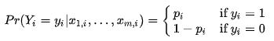
이렇게 표현된 확률 변수를 통해서 Y결과값을 추정하는 방법은 ‘최대 우도 추정 (Maximum Likelihood Estimation)이 있습니다. 로지스틱 회귀 모델을 위해서 로그값으로 만든 Log-likelihood Function을 최대값으로 만드는 상관관계 값을 구하는 것입니다.
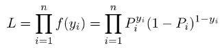
최대 우도 함수는 위와 같습니다. 이를 로그로 치환했을 때, 최대값으로 만드는 상관계수들의 값을 찾아내는 것이 Maximum Likelihood Estimation입니다. arg_max {log L} 식을 통해 bias와 weight들을 찾아냅니다. Y의 값을 찾아내기 위해서, 미리 관측된 데이터 값들을 사용합니다. 위의 식을 닫힌 형태(closed-form)의 형태로 찾아내는 것은 불가능하고, 데이터를 통해서 반복적으로 수정해 나가면서 결과 모델이 개선되는지 확인합니다. 결과가 수렴할 때까지의 개선을 반복해서 최종적으로 계수들을 구합니다. 그 알고리즘으로 ‘경사 하강법(gradient descent)’이 있습니다.
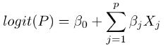
구해진 식을 토대로, 값을 구하게 되고, 결정 경계 (Decision Boundary)를 토대로 이항 Y값을 찾아 분류하면 완성입니다.
이제 연습 데이터 셋을 통해서 실습을 해보면 다음과 같습니다.
코드 파일 링크:
실습 화면으로 이동하기
3.2 Nominal Logistic Regreeion
다음으로 명목 로지스틱 회귀입니다. Binary한 경우를 일반화하면 가능하기에 multinomial(다항) 로지스틱 회귀라고 불립니다. 여기에 Ordering은 없습니다.
다항 로지스틱에서는 다수의 이항 로지스틱을 활용해서 그 결과를 구합니다. 한 경우(한 종속변수의 경우)를 1에서 다른 범주에 속할 확률의 합을 뺀 값임을 활용해서 수식을 세웁니다. 이를 Baseline-category Logit Model이라고 합니다. 이때 식의 개수는 분류의 가짓수 -1이 될 것입니다.
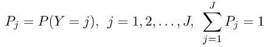
즉, 이렇게 식이 표현되었을 때, 모든 경우의 합이 1임을 활용해서
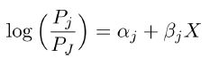
이렇게 하나의 경우를 baseline으로 생각하고,
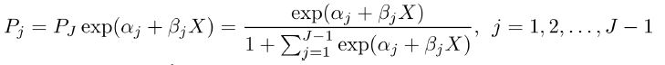
J-1개의 식을 세울 수 있습니다.
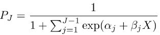
마지막으로 J의 경우에는 다음과 같이 표현됩니다.
상관계수들의 최적화는 이항 로지스틱 회귀와 같은 방법으로, 최대 우도 함수를 이용합니다.
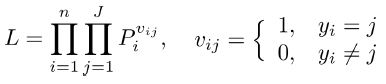
다음과 같은 식을 세우고,
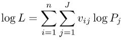
로그로 계산한 값을 데이터로 최적화하면 최종적으로 회귀식을 구할 수 있습니다.
이제 연습 데이터 셋을 통해서 실습을 해보면 다음과 같습니다.
코드 파일 링크:실습 화면으로 이동하기
3.3 Ordinal Logistic Regression
마지막으로 순서로, ‘서수 로지스틱 회귀’입니다. Multinomial이면서 Ordering이 들어간 결과를 고려합니다. 서열의 차이가 분명하게 드러나는 데이터를 분류해야 하는 가정을 가지고 로지스틱 회귀를 시작합니다. 따라서 이 경우에는 Cumulative Logit Model을 가정해야 합니다. 단순히 명목 데이터만을 분류할 경우와 달리 서수가 있는 분류에 있어서는, base부터 어느 ‘정도’까지를 나누는 판단이 존재하기 때문입니다.
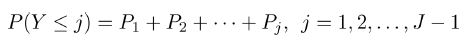
따라서 위와 같이 특정 Order 이하의 분류로 나뉠 가능성을 계산합니다.
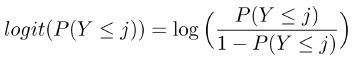
이를 로짓에 대응하면 위와 같으며
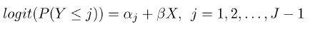
회귀식은 다음과 같습니다. 이때 순서형 척도를 종속변수로 하는 로지스틱 회귀분석의 중요한 가정은 회귀계수가 같다고 가정하는 것입니다. 어떠한 독립 변수의 변화가 Y<j에서 특정 j에 특별하게 영향을 미치지 않는다고 가정합니다. 예를 들어 J=3인 경우, j=1/2,3 과 j=1,2/3의 경우에 특정 x라는 독립변수의 변화가 두 분류에 다른 계수로 적용되지는 않게 합니다. 이 때문에 proportional odds model이라고 부르기도 합니다.
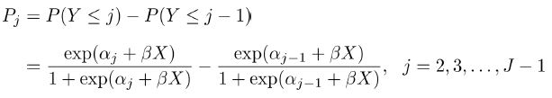
식은 이렇게 표현됩니다.
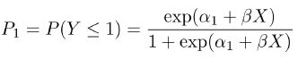
첫번째 순서에 분류될 확률은 이렇게 식으로 표현되며
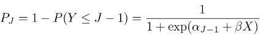
일반화한 J라는 순서에는 다음과 같은 확률로 분류됩니다. 이후 계수 추정은 앞서 설명한 다른 로지스틱 회귀와 같은 방법으로 진행합니다.
이제 연습 데이터 셋을 통해서 실습을 해보면 다음과 같습니다.
코드 파일 링크:실습 화면으로 이동하기
4. 로지스틱 회귀모형 실습
본문에서 미리 언급한 예제 코드들을 나열하면 아래와 같습니다.
코드 파일 링크1:Case Binominal
코드 파일 링크2:Case Nominal
코드 파일 링크3:Case Ordinal
블로그의 내용이 도움이 되었나요? 저에게 주신 의견을 바탕으로 더 나은 컨텐츠를 만들어갈게요:)